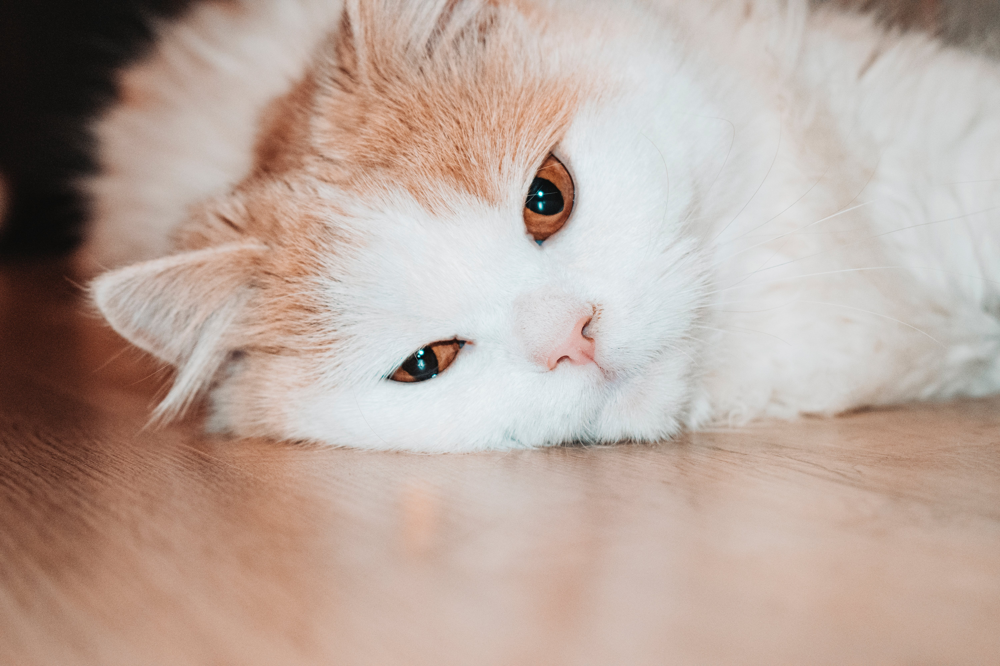

A macskák évszázadok óta jelen vannak az emberek életében. Nem véletlen, hogy sokan imádják ezeket az állatokat, hiszen úgy vélik, hogy önálló és független természetük rendkívül vonzó.
Ő itt Cirmi

Ő egy olyan macska, ami jól alkalmazkodott az emberrel való együttéléshez, nem alá-, vagy fölérendelt, hanem mellérendelt köztük a viszony. Élvezi, hogy körülötted lehet, szeretetteljes, és nagyrészt kiegyensúlyozott. Jól alkalmazkodik, sok szempontból ó az ideális macska és társ. Boldogan tölt veled időt anélkül, hogy agressziót vagy erőszakot alkalmazna, bármilyen negatív viselkedést produkálna.
Bár nem egy teljesen elvadult típus, ennek ellenére nem igazán szereti, ha megérintik, felveszik vagy interakcióba lépnek vele (természetesen az etetést és a jutalomfalatokat kivéve). Gyakran frusztrált, és abban sem lehetsz biztos, hogy számára kényelmes az, hogy Te is osztozol vele a házon.
Igazán társas lény, csak éppen nem téged, hanem egy másik macskát választ társnak. Igazán szeretetteljes, bújós és dorombolós, de ideje nagy részét másik macskával való összefonódással, ápolgatással és játékkal tölti.
Szívesen és gyakran kerül összetűzésbe a ház többi lakójával, jól bírja a konfrontációt, lesból is szuperül támad bokára! A határozottság és a következetesség sokat segít a viselkedése tompításában! A gazdinak mindenképpen ki kell okoskodnia, hogy lehet a dominanciájának határt szabni!
A cica nem megy oda bárkihez, és csak azokat tiszteli meg jelenlétével, akik kiérdemlik azt.
Ápolása: elhivatott gazdit igényel! A súrú aljször rendkívüli módon tud filcesedni, a keletkezett csomók kibontása pedig nemcsak nehézkes, de az állat számára fájdalmas is lehet. A legjobb mód leborotválni.